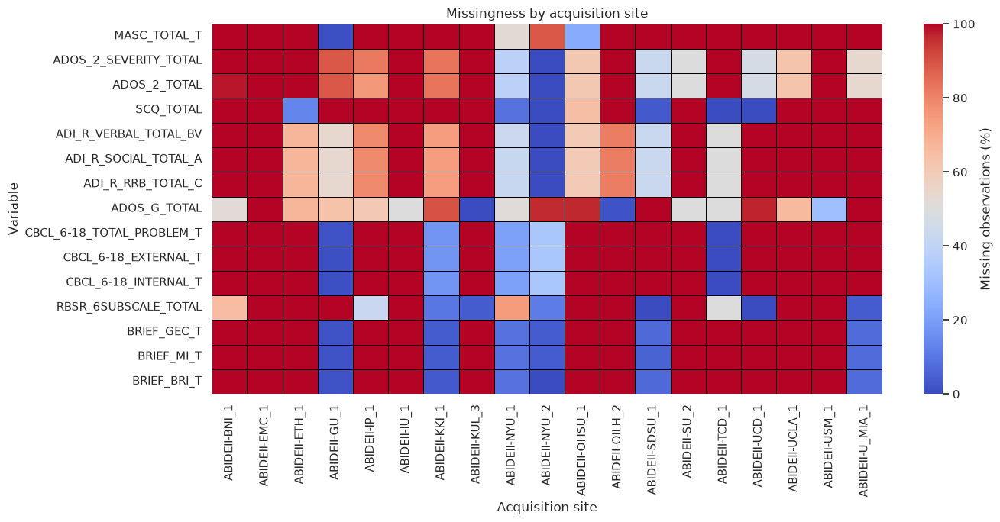
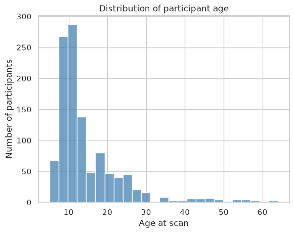

Exercise I: Exploratory Data Analysis (EDA)#
Learning objectives#
By the end of this exercise, you should be able to:
Inspect the dimensions and variables of a dataset
Distinguish categorical and numerical variables
Identify missing values and unusual observations
Visualize univariate and multivariate distributions
Detect potential confounding variables
Formulate questions for subsequent predictive analysis
Before we begin#
We will be using data from the Autism Brain Imaging Data Exchange II (ABIDE II). When we load data or perform actions that are less relevant for the current session, we will sometimes hide code cells to make the notebook simpler. However, you can check them out and expand your knowledge!
1. Importing and data loading#
Loading the ABIDE-II phenotypic data
The Autism Brain Imaging Data Exchange II (ABIDE-II) combines neuroimaging and phenotypic data collected across 19 international research sites. The complete phenotypic table contains several hundred variables, including demographic information, diagnostic assessments, cognitive scores, behavioral questionnaires, and acquisition-related variables.
The meaning and coding of each variable are documented in the official ABIDE-II Phenotypic Data Legend.
The complete ABIDE-II phenotypic dataset contains 348 variables. For this exercise, we will use a curated subset of 39 demographic, diagnostic, cognitive, and behavioral variables.
Some variables are recorded for nearly every participant, whereas others were collected only at particular sites or for particular participant groups.
2. Data inspection#
Before calculating statistics or creating visualizations, it is useful to inspect several individual observations. This can reveal how the dataset is organized, how variables are represented, and whether anything appears unexpected.
Pandas provides several ways to inspect rows:
phenotypes.head()displays the first rows.phenotypes.tail()displays the last rows.phenotypes.sample()displays randomly selected rows.Custom selection scripts can display particular rows, regularly spaced observations, or participants who meet specific conditions.
head() and tail() are convenient, but they may not represent the entire dataset. For example, datasets are sometimes sorted by acquisition site, diagnosis, age, or participant identifier. A random sample can provide a broader first impression.
Inspecting a random sample#
The sample() method selects rows randomly. Setting random_state makes the selection reproducible, meaning that everyone running the notebook will see the same participants.
# Our Pandas Dataframe is called phenotypes
phenotypes.sample(n=8, random_state=42)
| SITE_ID | SUB_ID | DX_GROUP | PDD_DSM_IV_TR | AGE_AT_SCAN | SEX | HANDEDNESS_CATEGORY | HANDEDNESS_SCORES | FIQ | VIQ | ... | SRS_TOTAL_T | SCQ_TOTAL | RBSR_6SUBSCALE_TOTAL | MASC_TOTAL_T | BRIEF_BRI_T | BRIEF_MI_T | BRIEF_GEC_T | CBCL_6-18_INTERNAL_T | CBCL_6-18_EXTERNAL_T | CBCL_6-18_TOTAL_PROBLEM_T | |
|---|---|---|---|---|---|---|---|---|---|---|---|---|---|---|---|---|---|---|---|---|---|
| 879 | ABIDEII-SDSU_1 | 28909 | 1 | NaN | 10.900000 | 1 | 1.0 | 80.0 | 104.0 | 105.0 | ... | 87.0 | 18.0 | 26.0 | NaN | 65.0 | 71.0 | 70.0 | NaN | NaN | NaN |
| 101 | ABIDEII-EMC_1 | 29907 | 2 | NaN | 6.685832 | 1 | 1.0 | NaN | NaN | NaN | ... | NaN | NaN | NaN | NaN | NaN | NaN | NaN | NaN | NaN | NaN |
| 1111 | ABIDEII-USM_1 | 29525 | 2 | 0.0 | 23.290900 | 1 | 1.0 | 80.0 | 123.0 | 107.0 | ... | NaN | NaN | NaN | NaN | NaN | NaN | NaN | NaN | NaN | NaN |
| 726 | ABIDEII-OHSU_1 | 28988 | 1 | NaN | 11.000000 | 2 | 1.0 | 100.0 | 96.0 | NaN | ... | 77.0 | NaN | NaN | 57.0 | NaN | NaN | NaN | NaN | NaN | NaN |
| 291 | ABIDEII-IP_1 | 29600 | 2 | 0.0 | 46.430000 | 2 | 1.0 | NaN | NaN | NaN | ... | NaN | NaN | NaN | NaN | NaN | NaN | NaN | NaN | NaN | NaN |
| 868 | ABIDEII-SDSU_1 | 28890 | 1 | NaN | 15.200000 | 1 | 3.0 | -40.0 | 80.0 | 75.0 | ... | 94.0 | 26.0 | 49.0 | NaN | 84.0 | 71.0 | 78.0 | NaN | NaN | NaN |
| 951 | ABIDEII-TCD_1 | 29100 | 1 | 2.0 | 18.750000 | 1 | 1.0 | NaN | 99.0 | 99.0 | ... | 84.0 | 18.0 | 30.0 | NaN | NaN | NaN | NaN | 61.0 | 56.0 | 64.0 |
| 260 | ABIDEII-IP_1 | 29595 | 1 | 1.0 | 27.360000 | 1 | 1.0 | NaN | 108.0 | NaN | ... | NaN | NaN | 16.0 | NaN | NaN | NaN | NaN | NaN | NaN | NaN |
8 rows × 39 columns
Questions for discussion#
Examine the sampled rows and the column names before continuing.
What does each row represent?
Which variables are categorical?
Remember that categorical variables are not necessarily stored as text. Some categories may be represented using numerical codes.Are there variables or subjects that seem problematic already?
Answer before inspecting the complete data summary.
3. Statistical inspection#
Looking at individual rows helps us understand the structure of a dataset, but it does not summarize the dataset as a whole. Pandas provides two useful starting points:
DataFrame.info()summarizes the dataset’s structure and data types.DataFrame.describe()calculates descriptive statistics for each variable.
These methods answer different questions and should usually be used together.
Dataset structure with info()#
info() reports:
the number of rows and columns;
each column’s data type;
the number of non-missing observations;
an estimate of memory usage.
It is particularly useful for detecting variables with missing data and variables stored using an unexpected data type.
phenotypes.info()
<class 'pandas.DataFrame'>
RangeIndex: 1114 entries, 0 to 1113
Data columns (total 39 columns):
# Column Non-Null Count Dtype
--- ------ -------------- -----
0 SITE_ID 1114 non-null str
1 SUB_ID 1114 non-null int64
2 DX_GROUP 1114 non-null int64
3 PDD_DSM_IV_TR 595 non-null float64
4 AGE_AT_SCAN 1114 non-null float64
5 SEX 1114 non-null int64
6 HANDEDNESS_CATEGORY 1091 non-null float64
7 HANDEDNESS_SCORES 641 non-null float64
8 FIQ 1015 non-null float64
9 VIQ 799 non-null float64
10 PIQ 872 non-null float64
11 FIQ_TEST_TYPE 1015 non-null str
12 CURRENT_MED_STATUS 991 non-null float64
13 EYE_STATUS_AT_SCAN 1113 non-null float64
14 ADI_R_SOCIAL_TOTAL_A 302 non-null float64
15 ADI_R_VERBAL_TOTAL_BV 301 non-null float64
16 ADI_R_RRB_TOTAL_C 302 non-null float64
17 ADOS_MODULE 535 non-null float64
18 ADOS_G_TOTAL 347 non-null float64
19 ADOS_2_TOTAL 269 non-null float64
20 ADOS_2_SEVERITY_TOTAL 264 non-null float64
21 SRS_VERSION 785 non-null float64
22 SRS_INFORMANT 785 non-null float64
23 SRS_TOTAL_RAW 785 non-null float64
24 SRS_AWARENESS_RAW 757 non-null float64
25 SRS_COGNITION_RAW 757 non-null float64
26 SRS_COMMUNICATION_RAW 785 non-null float64
27 SRS_MOTIVATION_RAW 785 non-null float64
28 SRS_MANNERISMS_RAW 785 non-null float64
29 SRS_TOTAL_T 756 non-null float64
30 SCQ_TOTAL 293 non-null float64
31 RBSR_6SUBSCALE_TOTAL 451 non-null float64
32 MASC_TOTAL_T 216 non-null float64
33 BRIEF_BRI_T 486 non-null float64
34 BRIEF_MI_T 485 non-null float64
35 BRIEF_GEC_T 484 non-null float64
36 CBCL_6-18_INTERNAL_T 401 non-null float64
37 CBCL_6-18_EXTERNAL_T 401 non-null float64
38 CBCL_6-18_TOTAL_PROBLEM_T 400 non-null float64
dtypes: float64(34), int64(3), str(2)
memory usage: 339.6 KB
Questions#
Examine the output of phenotypes.info().
How many participants and variables are present?
Which variables contain missing observations?
Are any categorical variables stored as numbers/strings?
Why might pandas assign the
objectdata type to a column?
Interpreting info()#
Strengths
Provides a quick overview of the entire dataframe.
Identifies columns containing missing values.
Helps detect incorrect data types.
Remains useful even when the dataframe has many rows.
Limitations
Does not show distributions, ranges, or unusual values.
Does not explain what numerical category codes mean.
A column’s storage type is not necessarily its statistical type. For example, diagnosis and sex may be stored as integers even though they are categorical variables.
Reports the number of missing observations, but not whether missingness follows a meaningful pattern.
Numerical summaries with describe()#
By default, describe() summarizes numerical columns. Its output includes:
count: number of non-missing observations;mean: arithmetic mean;std: sample standard deviation;minandmax: smallest and largest observed values;25%,50%, and75%: quartiles of the distribution.
Transposing the output (using .T) places variables in rows, which is often easier to read when the dataset contains many columns.
phenotypes.describe().T
# And for the categorical variables you can use:
# phenotypes.describe(include=["category"]).T
| count | mean | std | min | 25% | 50% | 75% | max | |
|---|---|---|---|---|---|---|---|---|
| AGE_AT_SCAN | 1114.0 | 14.864374 | 9.161864 | 5.128 | 9.296575 | 11.503593 | 18.0 | 64.0 |
| HANDEDNESS_SCORES | 641.0 | 70.937499 | 43.101969 | -100.000 | 64.290000 | 83.000000 | 100.0 | 100.0 |
| FIQ | 1015.0 | 111.023645 | 15.482364 | 49.000 | 101.000000 | 112.000000 | 122.0 | 151.0 |
| VIQ | 799.0 | 112.143930 | 16.415442 | 45.000 | 101.000000 | 112.000000 | 124.0 | 156.0 |
| PIQ | 872.0 | 108.342890 | 15.989322 | 53.000 | 98.000000 | 109.000000 | 119.0 | 149.0 |
| ADI_R_SOCIAL_TOTAL_A | 302.0 | 18.894040 | 5.925509 | 0.000 | 15.000000 | 19.000000 | 23.0 | 30.0 |
| ADI_R_VERBAL_TOTAL_BV | 301.0 | 15.089701 | 4.714014 | 0.000 | 12.000000 | 15.000000 | 19.0 | 25.0 |
| ADI_R_RRB_TOTAL_C | 302.0 | 5.705298 | 2.481005 | 0.000 | 4.000000 | 6.000000 | 7.0 | 12.0 |
| ADOS_G_TOTAL | 347.0 | 9.536023 | 4.723664 | 0.000 | 7.000000 | 10.000000 | 13.0 | 23.0 |
| ADOS_2_TOTAL | 269.0 | 12.345725 | 4.219203 | 1.000 | 9.000000 | 12.000000 | 15.0 | 25.0 |
| ADOS_2_SEVERITY_TOTAL | 264.0 | 6.992424 | 1.928360 | 1.000 | 6.000000 | 7.000000 | 8.0 | 10.0 |
| SRS_TOTAL_RAW | 785.0 | 55.275159 | 42.868608 | 0.000 | 16.000000 | 43.000000 | 92.0 | 199.0 |
| SRS_AWARENESS_RAW | 757.0 | 8.006605 | 5.051189 | 0.000 | 4.000000 | 7.000000 | 12.0 | 21.0 |
| SRS_COGNITION_RAW | 757.0 | 9.527081 | 8.323859 | 0.000 | 2.000000 | 7.000000 | 16.0 | 32.0 |
| SRS_COMMUNICATION_RAW | 785.0 | 18.239490 | 15.090331 | 0.000 | 5.000000 | 14.000000 | 31.0 | 55.0 |
| SRS_MOTIVATION_RAW | 785.0 | 9.463694 | 7.448909 | 0.000 | 3.000000 | 8.000000 | 15.0 | 32.0 |
| SRS_MANNERISMS_RAW | 785.0 | 9.864968 | 9.331323 | 0.000 | 1.000000 | 6.000000 | 17.0 | 36.0 |
| SRS_TOTAL_T | 756.0 | 59.358466 | 18.818473 | 34.000 | 42.000000 | 53.000000 | 76.0 | 116.0 |
| SCQ_TOTAL | 293.0 | 10.839590 | 9.246151 | 0.000 | 3.000000 | 8.000000 | 19.0 | 34.0 |
| RBSR_6SUBSCALE_TOTAL | 451.0 | 14.095344 | 18.667554 | 0.000 | 0.000000 | 5.000000 | 21.0 | 97.0 |
| MASC_TOTAL_T | 216.0 | 53.731481 | 11.269722 | 31.000 | 45.750000 | 52.000000 | 61.0 | 88.0 |
| BRIEF_BRI_T | 486.0 | 53.563786 | 14.769677 | 34.000 | 41.000000 | 50.000000 | 65.0 | 99.0 |
| BRIEF_MI_T | 485.0 | 54.558763 | 14.402965 | 30.000 | 42.000000 | 52.000000 | 67.0 | 92.0 |
| BRIEF_GEC_T | 484.0 | 54.429752 | 14.850017 | 30.000 | 41.000000 | 51.000000 | 68.0 | 96.0 |
| CBCL_6-18_INTERNAL_T | 401.0 | 53.748130 | 12.235150 | 33.000 | 45.000000 | 52.000000 | 65.0 | 87.0 |
| CBCL_6-18_EXTERNAL_T | 401.0 | 49.022444 | 10.845828 | 32.000 | 41.000000 | 48.000000 | 57.0 | 77.0 |
| CBCL_6-18_TOTAL_PROBLEM_T | 400.0 | 52.047500 | 13.477736 | 24.000 | 42.000000 | 51.000000 | 63.0 | 83.0 |
Interpreting describe()#
Strengths
Quickly summarizes the center, spread, and range of numerical variables.
The
countcolumn helps identify variables with missing observations.Minimum and maximum values can reveal impossible or unexpected observations.
Differences between the mean and median can suggest a skewed distribution.
Limitations
Categorical variables (with
Dtpye = Category) are excluded by default.Numerical category codes may be summarized as if they were quantitative measurements.
Summary statistics can hide multimodal distributions, outliers, and differences between groups or acquisition sites.
A small
countmay indicate structured missingness rather than random data loss.Plausible minimum and maximum values do not guarantee that all observations are valid.
Questions#
Use the output above to answer the following questions.
Which variables have the most missing data?
Find one variable for which the mean and median differ noticeably. What might cause this difference?
Do any minimum or maximum values appear biologically or clinically surprising?
Why is calculating a mean for
DX_GROUPorSEXusually not meaningful?Could two variables have identical means and standard deviations but very different distributions?
4. Missing values#
A missing value indicates that no usable value is available for a particular participant and variable.
In pandas, missing values are usually represented as NaN or <NA>.
A measurement may be missing because it was not collected, was not applicable, failed quality control, or was unavailable at a particular acquisition site.
Before deciding how to handle missing values, we should ask:
How much data is missing?
Which variables and participants are affected?
Is the missingness associated with site, diagnosis, or another variable?
Which variables are actually required for our analysis?
Quantifying missing values#
missing_summary = pd.DataFrame(
{
"n_missing": phenotypes.isna().sum(),
"percent_missing": phenotypes.isna().mean() * 100,
}
).sort_values("percent_missing", ascending=False)
missing_summary.query("n_missing > 0").round(1)
| n_missing | percent_missing | |
|---|---|---|
| MASC_TOTAL_T | 898 | 80.6 |
| ADOS_2_SEVERITY_TOTAL | 850 | 76.3 |
| ADOS_2_TOTAL | 845 | 75.9 |
| SCQ_TOTAL | 821 | 73.7 |
| ADI_R_VERBAL_TOTAL_BV | 813 | 73.0 |
| ADI_R_SOCIAL_TOTAL_A | 812 | 72.9 |
| ADI_R_RRB_TOTAL_C | 812 | 72.9 |
| ADOS_G_TOTAL | 767 | 68.9 |
| CBCL_6-18_TOTAL_PROBLEM_T | 714 | 64.1 |
| CBCL_6-18_EXTERNAL_T | 713 | 64.0 |
| CBCL_6-18_INTERNAL_T | 713 | 64.0 |
| RBSR_6SUBSCALE_TOTAL | 663 | 59.5 |
| BRIEF_GEC_T | 630 | 56.6 |
| BRIEF_MI_T | 629 | 56.5 |
| BRIEF_BRI_T | 628 | 56.4 |
| ADOS_MODULE | 579 | 52.0 |
| PDD_DSM_IV_TR | 519 | 46.6 |
| HANDEDNESS_SCORES | 473 | 42.5 |
| SRS_TOTAL_T | 358 | 32.1 |
| SRS_COGNITION_RAW | 357 | 32.0 |
| SRS_AWARENESS_RAW | 357 | 32.0 |
| SRS_MOTIVATION_RAW | 329 | 29.5 |
| SRS_MANNERISMS_RAW | 329 | 29.5 |
| SRS_TOTAL_RAW | 329 | 29.5 |
| SRS_COMMUNICATION_RAW | 329 | 29.5 |
| SRS_INFORMANT | 329 | 29.5 |
| SRS_VERSION | 329 | 29.5 |
| VIQ | 315 | 28.3 |
| PIQ | 242 | 21.7 |
| CURRENT_MED_STATUS | 123 | 11.0 |
| FIQ | 99 | 8.9 |
| FIQ_TEST_TYPE | 99 | 8.9 |
| HANDEDNESS_CATEGORY | 23 | 2.1 |
| EYE_STATUS_AT_SCAN | 1 | 0.1 |
The percentage of missing observations is calculated separately for each variable:
A large percentage does not automatically mean that a variable should be removed. A sparsely measured variable could still be scientifically important.
Questions#
Which variables contain no missing values?
Which variables have more than 50% missing observations?
Would you automatically remove a variable because it has more than 50% missing data? Why or why not?
Does this table tell us why the values are missing?
Is missingness distributed randomly?#
ABIDE-II combines data from multiple research sites. Different sites may have administered different questionnaires or used different assessment procedures.
Consequently, missingness may be related to the acquisition site. If so, removing incomplete observations could change the representation of sites in the dataset.

Interpret the heatmap#
Is missingness approximately equal across acquisition sites?
Can you identify assessments that appear to have been collected only at particular sites?
What would happen to the representation of sites if we retained only complete participants?
Could acquisition site be related to both missingness and diagnosis?
Answer for Q4
Missingness can also depend on diagnosis. For example, some autism-specific assessments may have been administered primarily to participants in the autism group.
Common approaches to missing data#
There is no single correct method for handling every missing value. The appropriate choice depends on why values are missing, how much is missing, and how the variable will be used.
Approach |
Appropriate when |
Main limitation |
|---|---|---|
Keep missing values |
During EDA or when each analysis uses different variables |
Some calculations and models cannot accept missing data |
Drop incomplete rows |
Few rows are missing and missingness is plausibly unrelated to the result |
Can reduce sample size and introduce selection bias |
Drop a variable |
It is not essential and has insufficient usable data |
Potentially discards important information |
Mean imputation |
Rough baseline for approximately symmetric numerical data |
Reduces variance and distorts relationships |
Median imputation |
Numerical data are skewed or contain outliers |
Still reduces variability and ignores uncertainty |
Mode imputation |
Few categorical values are missing |
Artificially increases the most common category |
Explicit “not recorded” category |
Missingness itself may be informative |
Model may learn study procedures rather than biology |
Group-specific imputation |
Groups have meaningful distributional differences |
Can cause leakage, especially if using the outcome |
KNN/model-based imputation |
Other variables strongly predict the missing value |
More complex and may introduce model assumptions |
Multiple imputation |
Statistical inference must reflect imputation uncertainty |
More complex and produces multiple datasets |
Missingness indicator |
Whether a value is missing may carry information |
May encode site or acquisition artifacts |
Removing incomplete observations#
The simplest approach is complete-case deletion: retain only rows that have values for every required variable.
The dataframe contains 39 variables, including several questionnaires that were collected only at some sites.
Predict before running: How many participants do you expect would remain if we required complete data for all 39 variables?
| dataset | n_participants | percent_retained | |
|---|---|---|---|
| 0 | Original dataset | 1114 | 100.0 |
| 1 | Complete for all 39 variables | 1 | 0.1 |
| 2 | Complete for selected core variables | 1015 | 91.1 |
Questions#
Why can requiring complete data for all variables remove almost every participant?
Why is deletion based on a specific analysis subset more reasonable?
Could the retained participants differ systematically from the excluded participants?
What should be checked before concluding that complete-case deletion is safe?
Imputing a numerical variable#
Imputation replaces missing observations with estimated values. As a simple example, we will replace missing FIQ values with the median observed FIQ.
We will work on a copy so that the original dataframe remains unchanged.
Median FIQ used for imputation: 112.0
Number of imputed observations: 99
pd.DataFrame(
{
"Original FIQ": imputation_demo["FIQ"].describe(),
"Median-imputed FIQ": imputation_demo["FIQ_imputed"].describe(),
}
).round(2)
| Original FIQ | Median-imputed FIQ | |
|---|---|---|
| count | 1015.00 | 1114.00 |
| mean | 111.02 | 111.11 |
| std | 15.48 | 14.78 |
| min | 49.00 | 49.00 |
| 25% | 101.00 | 103.00 |
| 50% | 112.00 | 112.00 |
| 75% | 122.00 | 120.00 |
| max | 151.00 | 151.00 |
Important limitation
Median imputation solves the computational problem of missing values, but it does not reconstruct the unobserved measurements.
It introduces a concentration of observations at the median, usually reduces the estimated variance, and can weaken relationships between FIQ and other variables.
We filled the values without changing the distribution a lot. What would happen if we implemented this for all variables? Try it yourself!
Handling missing categories#
For a categorical variable, possible approaches include:
replacing missing values with the most frequent category;
creating an explicit category such as
"Not recorded";excluding the variable or incomplete participants.
An explicit missing category is useful when the absence of a value may itself be informative. However, it may also allow a model to learn differences between sites or data-collection procedures.
imputation_demo["CURRENT_MED_STATUS"] = phenotypes["CURRENT_MED_STATUS"]
imputation_demo["CURRENT_MED_STATUS_filled"] = (
imputation_demo["CURRENT_MED_STATUS"]
.astype("object")
.fillna("Not recorded")
.astype("category")
)
imputation_demo[
["CURRENT_MED_STATUS", "CURRENT_MED_STATUS_filled"]
].value_counts(dropna=False)
CURRENT_MED_STATUS CURRENT_MED_STATUS_filled
0.0 0.0 824
1.0 1.0 167
nan Not recorded 123
0.0 1.0 0
Not recorded 0
1.0 0.0 0
Not recorded 0
nan 0.0 0
1.0 0
Name: count, dtype: int64
Question#
Suppose medication status is missing mainly at one acquisition site. What might a classification model learn from the "Not recorded" category?
Answer
The model may use "Not recorded" as an indirect indicator of acquisition site.
If site composition also differs between diagnostic groups, the model could appear to predict diagnosis while partly learning where the participant was scanned.
Common approach:#
For the exploratory analysis (as done here), we will not immediately impute or delete all missing values. Instead, we will:
preserve the original phenotype table;
report the available sample size for each variable;
examine whether missingness differs by site or diagnosis;
select variables according to the specific analysis;
perform deletion or imputation only when required.
For later machine-learning analyses, imputation parameters must be estimated using the training data only. Calculating an imputation value from the complete dataset before cross-validation would allow information from the test participants to influence preprocessing and would constitute data leakage.
5. Distributions and feature correlations#
Summary statistics describe variables using only a few numbers. Visualizing their distributions can reveal information that the mean and standard deviation may hide, including:
skewness;
multiple peaks;
restricted ranges;
unusual observations;
differences between participant groups.
We will first examine individual variables and then investigate relationships between features.
Numerical distributions#
A histogram divides the observed range into intervals called bins and counts the observations within each interval.
The choice of bin width matters. Too few bins can hide important structure, while too many bins can make random variation appear meaningful.
variable = "AGE_AT_SCAN"
sns.histplot(
data=phenotypes,
x=variable,
bins=25,
color="steelblue",
)
plt.xlabel("Age at scan")
plt.ylabel("Number of participants")
plt.title("Distribution of participant age")
plt.show()

Try it yourself#
Is the age distribution symmetric?
Does it appear to contain one population or several age groups?
Change
bins=25tobins=5. What information disappears?Change it to
bins=100. Does the additional detail appear meaningful?Replace
AGE_AT_SCANwithFIQ. How does the distribution change?